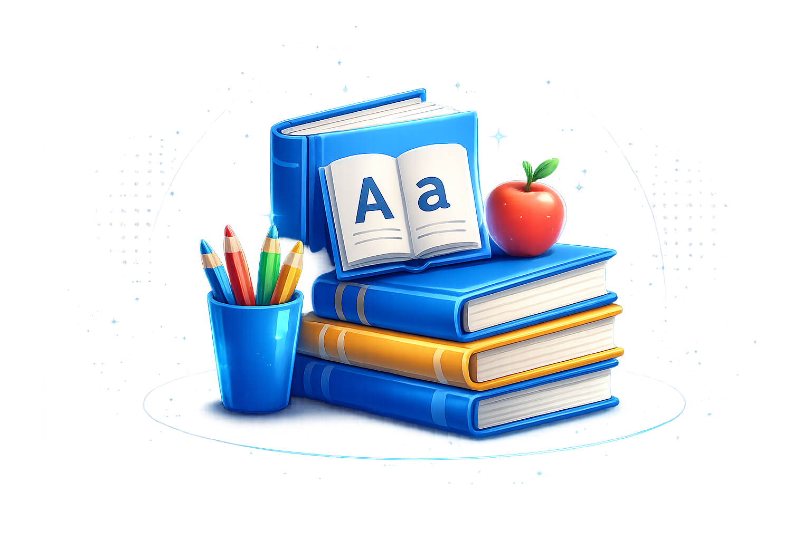

VOLHARD
Empowering every learner through structured curriculum, innovation, and academic excellence.
At Voorpos Primary School, learning is designed to support the growth of the whole child. We create engaging classroom experiences that encourage curiosity, confidence, and a love for learning while helping learners build important life skills.
We follow the CAPS curriculum and deliver a balanced program that develops knowledge, skills, and character.
Grade R – 3 focusing on literacy, numeracy, and life skills.

Our Foundation Phase builds strong reading, writing, and mathematics skills while developing creativity, confidence, and social awareness.
Grade 4 – 7 building academic depth and independent thinking.
Learners transition into structured subject-based learning with emphasis on critical thinking and problem-solving.
At Voorpos Primary, we believe every learner learns differently. Our educators create engaging, supportive, and interactive classroom experiences that encourage participation, collaboration, creativity, and critical thinking.
Providing additional support to help every learner succeed academically and build confidence.
Helping learners improve problem-solving and confidence.
Improving reading, vocabulary, and comprehension.
Focused revision sessions before assessments.